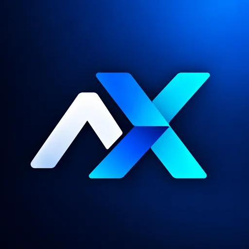
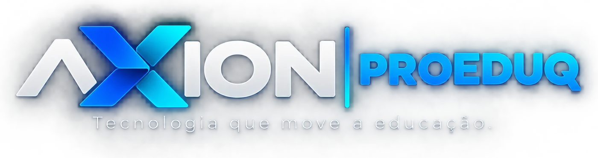
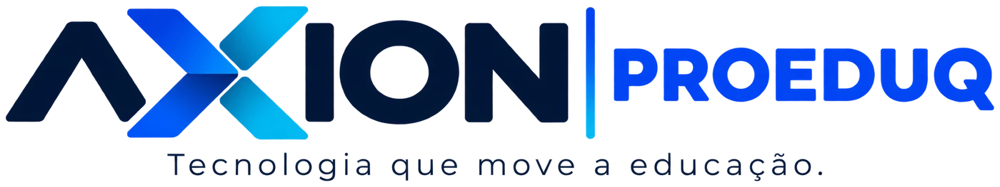

Criamos plataformas digitais que aproximam professores, alunos e famílias, organizam o dia a dia da escola e transformam registros de aula em aprendizagem que se acompanha, se mede e se celebra.
Diário digital✦Biblioteca offline✦I.A. pedagógica✦Privacidade LGPD✦Gestão escolar✦Ranking de Poder✦Relatório individual✦Educação inclusiva✦Feito na escola pública✦Diário digital✦Biblioteca offline✦I.A. pedagógica✦Privacidade LGPD✦Gestão escolar✦Ranking de Poder✦Relatório individual✦Educação inclusiva✦Feito na escola pública✦
Quem somos
Nascemos dentro da sala de aula
A AXION PROEDUQ reúne as tecnologias educacionais criadas pelo professor Paulo Roberto Ramalho Magalhães, em Senador Guiomard, no Acre. Cada ferramenta surgiu de uma necessidade real da escola: registrar aulas com cuidado, acompanhar cada aluno de perto e oferecer leitura e estudo de qualidade, inclusive onde a internet é instável.
Hoje o grupo abriga plataformas que trabalham juntas e é a casa dos próximos projetos que vierem para somar à educação.

Do quadro-negro ao código, sem perder o olhar de professor.
0
plataformas integradas em uso
0
ferramentas de I.A. para o professor
0%
gratuito para os alunos
0
ano de fundação da marca
Propósito
Por que existimos
Três ideias guiam tudo o que construímos. Passe o mouse (ou toque) para virar cada cartão.
Plataformas
Um ecossistema que não para de crescer
Cada plataforma resolve uma parte da vida escolar. Juntas, elas cobrem o caminho inteiro: do registro da aula ao estudo do aluno e à gestão da escola.
O diário digital do professor. Relatos de aula, frequência, atividades, conduta e notas de cada turma num só lugar, com cálculos automáticos, histórico permanente e um assistente de I.A. que trabalha junto.
O acervo digital do aluno, com estética medieval. Livros de cada série, disciplina e bimestre, avaliações, jogos e um ranking que transforma o estudo numa jornada.
A plataforma de gestão escolar do grupo. A escola cadastra turmas e alunos uma vez, e cada professor, mediador e família recebe o que precisa, no lugar certo e com segurança.
Para quem
Gestão escolarSecretariaRedes de ensino
Situação
em desenvolvimento
Cadastro único de alunos e turmas, ligado ao código INEP da escola.
Turmas e alunos entregues direto ao diário de cada professor.
Código do aluno para compartilhar o acompanhamento da Educação Especial.
Visão da escola inteira: frequência, notas e alertas de quem precisa de apoio.
O próximo espaço é seuNovas plataformas de apoio educacional
A AXION PROEDUQ foi criada para abrigar as próximas ideias. Toda nova plataforma nasce de uma necessidade observada em sala e chega aqui assim que estiver pronta para as escolas.
Reforço e recomposiçãoComunicação com a famíliaPlanejamento coletivoFormação de professoresAvaliações em larga escalaSua sugestão?
Um banco de dados protegido no centro, e cada informação seguindo o caminho certo. Passe o mouse sobre um fluxo para ver por onde ele passa.
Frequência e atividades do diário viram a nota de trabalho do aluno.
Observações de conduta aparecem no relatório e no boletim, com regras combinadas.
A prova feita no livro digital vira a nota de prova do bimestre no diário.
O aluno vê o próprio boletim e o relatório anual, sempre atualizados.
Em breve: o Conex-ED entrega turmas e alunos da escola direto a cada plataforma.
Princípios
Como trabalhamos
Os princípios que orientam cada decisão, do desenho de uma tela à forma de guardar uma nota.
O aluno no centro
Toda ferramenta existe para a aprendizagem: acompanhar o progresso, reconhecer o esforço e agir cedo quando algo não vai bem.
O professor decide
A inteligência artificial organiza e sugere. A decisão pedagógica final, sobre nota, conduta ou conteúdo, é sempre do professor.
Privacidade por padrão
Cada pessoa vê apenas o que é dela. Nomes de alunos viram códigos antes de irem para a I.A., e seguimos a LGPD.
Nada se perde
O histórico escolar é patrimônio do aluno. Os registros ficam guardados por ano letivo, com cada alteração datada e recuperável.
Acesso para todos
Funciona no celular, instala como aplicativo e continua útil sem internet. A realidade da escola rural faz parte do projeto.
Melhoria contínua
As plataformas evoluem toda semana, a partir do uso real em sala. O retorno de professores e alunos vira funcionalidade.
Valores
O que não negociamos
Seis valores giram em torno de tudo o que fazemos. Escolha um.
Ética
Dados de alunos só servem à vida escolar deles. Nunca para publicidade.
Rumo
Aonde queremos chegar
Metas que orientam o crescimento da AXION PROEDUQ e das plataformas que ela abriga.
01
Devolver tempo ao professor
Automatizar o que é repetitivo, como cálculos, contagens e relatórios, para sobrar mais tempo para ensinar.
02
Acompanhar cada aluno de perto
Transformar registros diários em sinais claros de quem precisa de apoio, a tempo de agir.
03
Levar o estudo a qualquer lugar
Material de qualidade no celular, com ou sem internet, para escolas urbanas e rurais.
04
Aproximar escola e família
Boletins e relatórios que o aluno e o responsável entendem e acessam quando quiserem.
05
Conectar a escola inteira
Com o Conex-ED, gestão, professores e famílias trabalhando sobre os mesmos dados, com segurança.
06
Inovar a partir da escola
Criar novos projetos sempre a partir de necessidades reais observadas em sala de aula.
A marca
Caminhos que se encontram
O “X” é formado por setas que se cruzam: ensino e tecnologia avançando juntos, na mesma direção. Passe o mouse no símbolo para abri-lo.
EnsinoTecnologia

Para fundo escuro

Para fundo claro
Vamos conversar
Sua escola quer caminhar junto?
Escolas, redes de ensino, professores e parceiros: fale com a AXION PROEDUQ para conhecer as plataformas, sugerir uma ideia ou acompanhar o lançamento do Conex-ED.